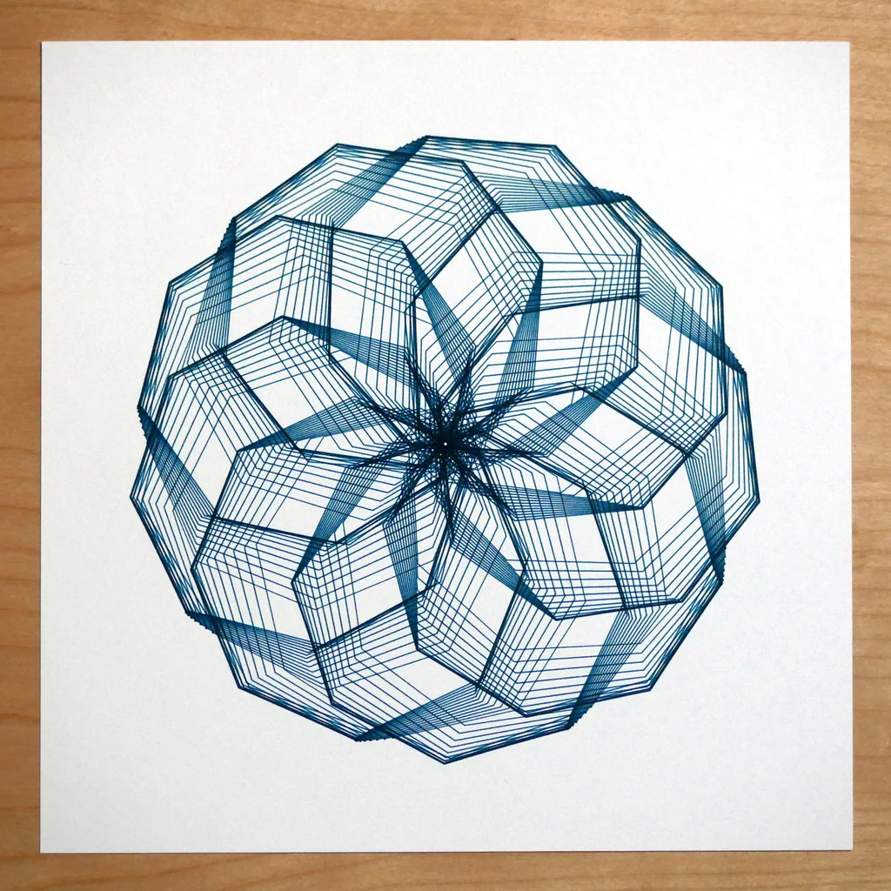
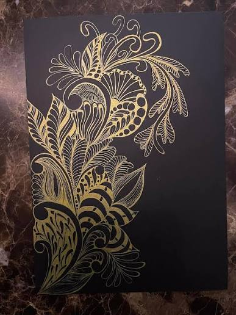
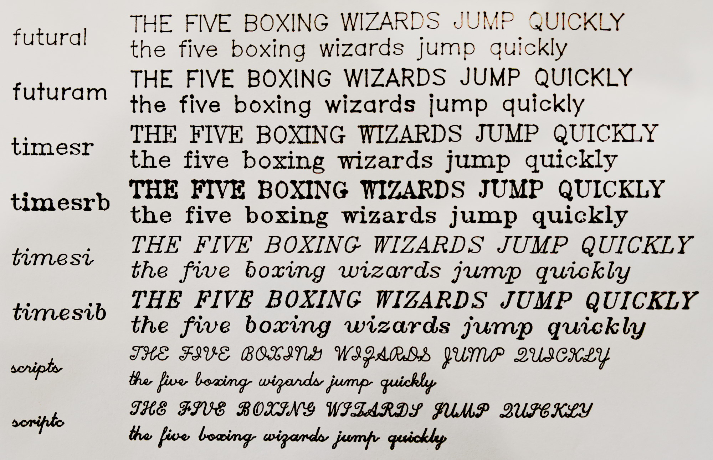
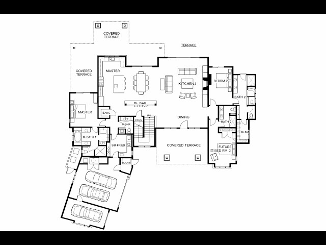
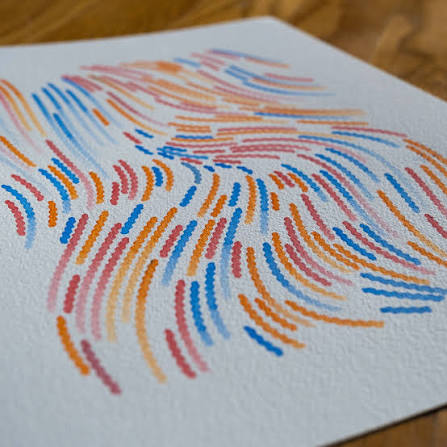
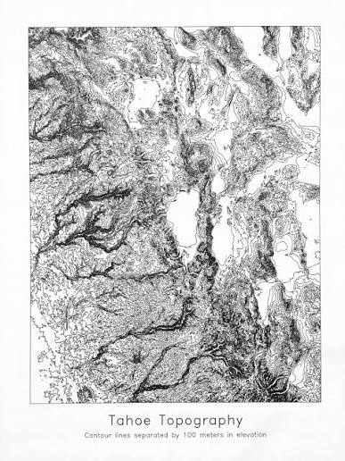

High-precision vector line drawing, custom illustrations, technical schematics, and generative art using physical pens and markers.
Pen plotting combines digital vector precision with the authentic feel and texture of real ink on paper. Unlike standard inkjet or laser printers that spray dots of toner, a CNC pen plotter draws continuous, fluid line art using physical pens, fine-liners, metallics, or technical markers. This creates razor-sharp line quality, smooth curves, and an organic tactile finish that digital printing simply cannot replicate.
Using automated vector toolpaths, our plotting equipment can render complex geometric patterns, architectural elevations, custom calligraphy, and intricate generative art. Whether you need custom wedding invitations, limited edition art prints, circuit schematics, or personalized stationery, pen plotting brings digital vector designs onto high quality paper stock with microscopic accuracy.
Our Plotting Fleet
We utilize precision CNC plotting hardware outfitted with custom tool adapters for a wide range of pen types and line weights.
Machine Model
Capabilities
Working Area
Primary Use
Cricut Explore Air 2
Dual tool head vector plotting, pen sketching, and foil transfer
12" x 24"
Fine-line vector drawing, custom stationery, line art prints, and technical schematics
Our Pen and Material Guide
Pen plotting relies on the precise interaction between liquid ink chemistry, tip geometry, and paper fibers.
Because every pen type reacts differently to paper absorbency, choosing the correct combination is critical for crisp lines, zero bleeding, and uniform density.
1. Pen and Ink Classifications
Technical Fineliners / Archival Micro-Pens (0.1mm - 0.5mm):
Loaded with pigment-based archival ink that resists water and UV fading. Ideal for ultra-dense generative art, micro-schematics, architectural elevations, and hairline vector details without bleeding.
Gel Inks / Rollerballs (0.5mm - 1.0mmm):
Offers consistent, high-opacity line flow over smooth cardstock. Excellent for bold graphic line art, high-speed plotting, and continuous contour mapping.
Metallic / Opaque Gel Pens:
Formulated with suspended metallic pigments that sit on top of dark paper rather than soaking in. Yields reflective, high-contrast gold, silver, and copper vector art on matte black or deep Navy stock.
Liquid Acrylic / Paint Markers:
Provides vibrant, high-saturation coverage for heavy line weights and bold geometric fills on heavy paper, wood veneer, or synthetic media.
Dual-Tip Brush / Calligraphy Pens:
Simulates organic hand-lettering and dynamic line-weight transitions for custom invitations, place cards, and decorative typography.
Specialized Foil Transfer Tools:
Uses pressure-based foil application to press reflective metallic fill directly onto paper along precise vector paths.
2. Substrates and Paper Media
Smooth Heavyweight Cardstock (80lb - 110lb Cover):
The industry standard for pen plotting. The tight, untextured surface prevents pen tips from catching and ensures uniform ink absorption.
Hot-Press Cotton / Rag Paper:
An ultra-smooth archival option with zero surface texture. Perfect for high-end gallery prints, archival line drawings, and limited-edition runs.
Cold-Press / Textured Watercolor Media:
Adds subtle, organic texture to liquid ink plots. Best paired with broader pen tips (0.7mm+) or paint markers to prevent tip skipping.
Vellum / Translucent Tracing Media
Semi-transparent drafting paper engineered for technical schematics, layered overlay artwork, and architectural blueprints.
Kraft / Recycled Fibers:
Provides a rustic, natural brown aesthetic that pair exceptionally well with dark black or opaque white inks.
Black and Dark-Toned Poster Board:
Heavyweight dark stock curated specifically for metallic gel, white ink, and foil plotting runs.
3. Plotting and Technical Considerations
Line Weight and Offset Calibration:
We adjust blade and pen offsets in software to ensure corners close perfectly without overshooting or leaving ink pools at path endpoints.
Hatch and Vector Fill Densities:
Since plotters only draw lines, solid shapes require custom cross-hatching or concentric line fills programmed at precise line-spacing intervals.
Custom Tool Adapters and Media:
Have a specific fountain pen, custom ink set, or specialized handmade paper? Contact us to run a custom test pass for your project!
Pen Plotting Gallery
A look at what physical ink and digital vector toolpaths can create together!

Intricate Generative Vector Art Print

Gold Metallic Ink on Black Cardstock

Custom Vector Calligraphy and Lettering

Precision Architectural Line Schematic

Multi-Color Layered Line Illustration

Topographic Contour Elevation Plot
Frequently Asked Questions
Quick answers to common questions about our pen plotting service.
How is pen plotting different from standard digital printing?
Standard printers use microscopic ink dots to approximate shapes, whereas a pen plotter physically draws unbroken lines using actual ink pens. This results in crisp lines, vibrant solid colors, and unique ink textures on real paper.
What file formats do I need to supply for pen plotting?
Because plotters draw along paths, we require vector files like SVG, DXF, PDF, or AI. Every line in your artwork will be followed directly by the pen tip.
Can you plot in multiple colors on the same print?
Yes! We can assign different vector layers in your design to different pen colors or line weights, swapping pens between passes for multi-color drawings.
Can I supply my own pens or custom paper stock?
In most cases, yes! As long as the pens fit our machine adapters and the paper fits within our 12" x 24" cutting mat area, we can accommodate custom media.
Can you convert raster photos or sketches into line art?
Yes, we offer vectorization services to convert raster images, high-contrast drawings, or hand-written notes into plottable vector line art.